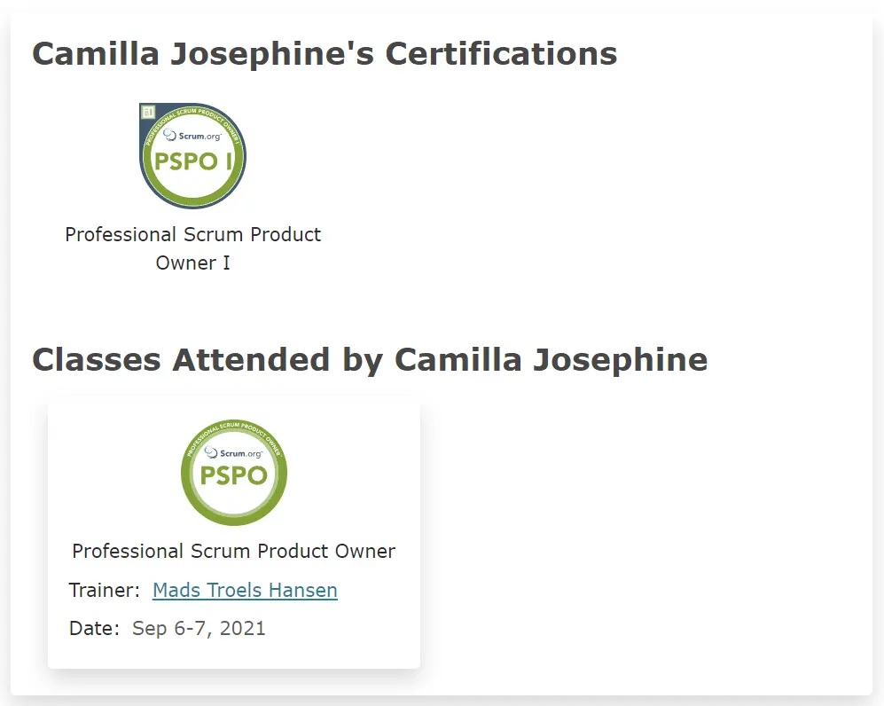
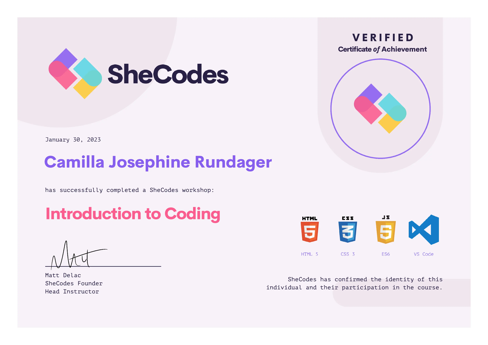

Hej 🌸
Mit navn er Camilla Josephine Rundager. Jeg er en struktureret, analytisk, kreativ og nysgerrig person med stor interesse for krydsfeltet mellem kommunikation, kreativitet og det digitale. Min passion for at tilegne my ny viden driver mig til at opsøge muligheder for at lære nye færdigheder samt forbedre eksisterende færdigheder og interesser - både i mit arbejdsliv og i min fritid.
Mine kreative udfoldelser inkluderer alt fra at tegne og male til DIY-projekter. Naturen er mit fristed, hvor jeg finder ro og nyder smukke øjeblikke sammen med min hund og min hest. Jeg er tv- og filmentusiast med "speciale" i sci-fi. Jeg elsker en god historie og samler på smukke bøger.
Erhvervserfaring
DigitalCareer
Oktober 2022 - nu
Recruitment Consultant (senere Content & Marketing Manager)
Scalepoint
December 2020 - Septemper 2022
Product Owner
August 2019 - December 2020
Junior Product Owner
Marts 2019 - August 2019
Technical Support Agent & Incident Manager
November 2018 - Marts 2019
Technical Support Agent
Oktober 2017 - November 2018
Customer Support Agent
Syddansk Universitet
September 2016 – December 2016
Tutor i Dansk Grammatik
Uddannelse
KEA - Københavns Erhvervsakademi
August 2023 - nu
Multimediedesigner
Syddansk Universitet
2015 - 2018
Bachelor i International Virksomhedskommunikation
Mine toptalenter
Talenter afspejler kognitive evner, mønstre og måder, som mennesker reagerer på. Personlighedstesten TT38 mapper ens talenter i en professionel kontekst. Når man arbejder med noget, der ligger inden for ens toptalenter, præsterer man bedre, man er mere motiveret og man får god energi. Mit håb og min forventning er at mine arbejdsområder inden for multimediedesign-branchen matcher mine toptalenter.
Lærende
Kommunikerende
Disciplineret
Mine certificeringer
Professionel Scrum Product Owner
Gennemførte et 2-dags kursus på Teknologisk Institut afsluttet med en online multiple choice test (score 96% rigtig). Verification email: car@scalepoint.com
Se certifikat

SheCodes: Introduction to Coding
Et introducerende kodekursusforløb, der gav mig indsigt i frontend udvikling og dertilhørende kodeteknologier såsom HTML, CSS og JavaScript.
Se certifikat